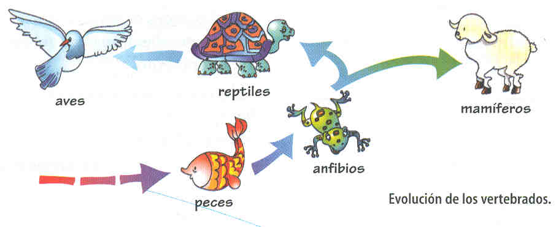

Evolución de los vertebrados
Los animales vertebrados tienen una larga historia evolutiva. Los biólogos consideran que los vertebrados evolucionaron durante millones de años a partir de animales similares a las actuales lancetas, las cuales remueven la arena del lecho marino y filtran el alimento del agua. Las lancetas poseen ciertos rasgos similares a los vertebrados, incluyendo una estructura de soporte denominada notocorda que se extiende a lo largo de toda la longitud de su cuerpo. En las lancetas, la notocorda es la única parte dura del cuerpo y permite al animal avanzar serpenteando sin perder su forma. En la mayoría de los vertebrados, la notocorda se pierde al principio del desarrollo y su función es asumida por los huesos. Las características compartidas por lancetas y vertebrados hacen que los científicos los clasifiquen juntos en el filo Cordados.
